|
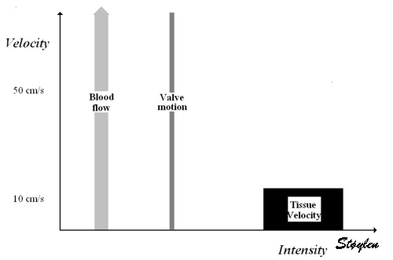
|
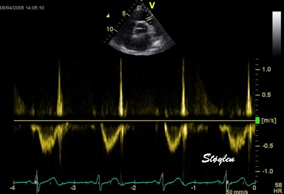
|
|
The
diagram to the left shows the placement of flow and tissue signals on
this intensity (amplitude) / velocity diagram. Velocity given as the
height ogf the bars, intensdity showb both by the placement on the x
axis, as well as the darkness of the bars, black being the highest
intensity. The flow signals are low intensity but mostly high velocity,
while the tissue is exclusively low velocity, high intensity. The heart
valves, however, are solid structures which moves with the velocity of
the passing blood, resulting in high intensity signals giving a
saturation of the Doppler spectrum. A typical flow curve from the right
ventricular outflow tract is shown to the left, with the valve click.
|
|
|
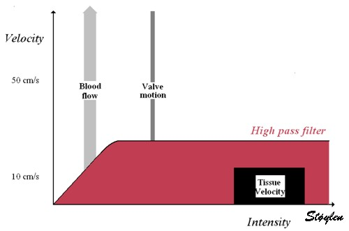
|
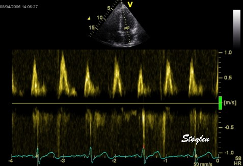
|
|
Application
of a high pass filter (low velocity reject) shown schematically to the
left and in practice applied to a mitral flow curve to the right.
Velocities lower than the limits of the green bar (showing the range of
the filter) are removed seen in the dark zone in the middle of the
spectrum. The setting rejects velocities at blood intensities below 15
- 20 cm/s, which is too high for normal flow velocities as in this
instance, although may often be useful in continuous wave Doppler
recordings of high velocities in jets.
|
|
|
|
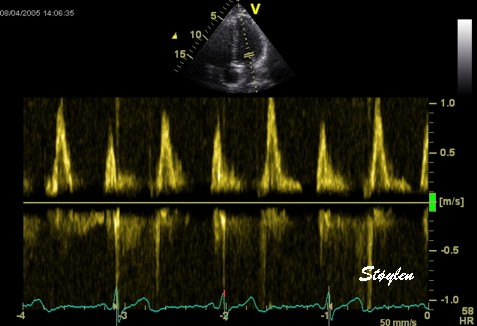 |
|
The
filter is adjustable and is here reduced to 10 cm/s
|
|
|
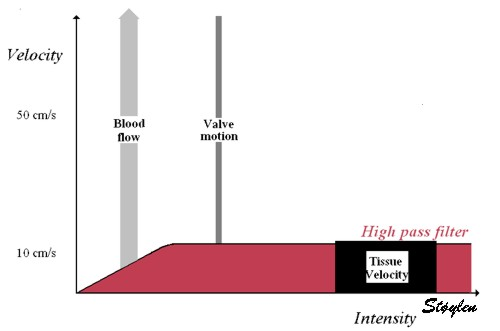
|
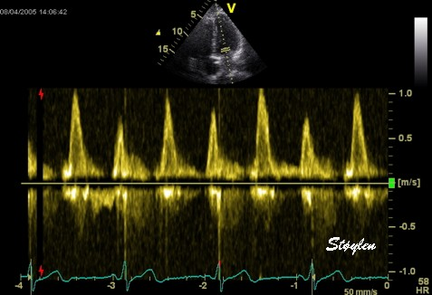
|
|
Further
reduction in the filter below 10 cm/s results in high intensity signals
becoming visible, especially in early diastole. This is tissue signals
from the mitral ring.
|
|
|
|
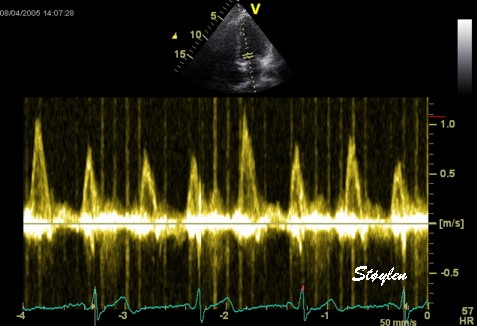
|
|
Fully
removing the filter results in a dense band of high intensity tissue
signals around the baseline. The signal is difficult to analyse, as it
has so high amplitude that the display is saturated.
|
|
|
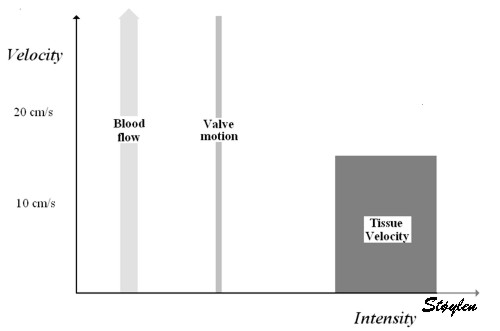
|
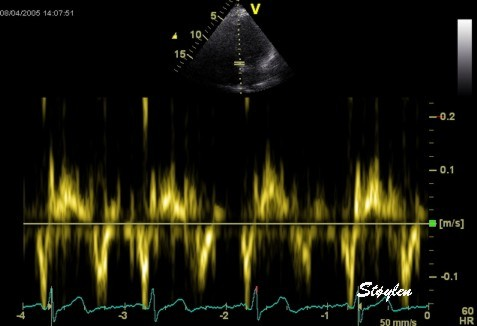
|
|
Decreasing
the scale and gain (shown as all signals being illustrated in lighter
colour, but with the same relative placement on the x axis), and
placing the sample volume near the mitral ring, discloses the tissue
velocity curve of the ring, still taken with an ordinary Doppler. The
flow signal, having a much lower amplitude, is removed simply by
reducing the gain.
|
|
|
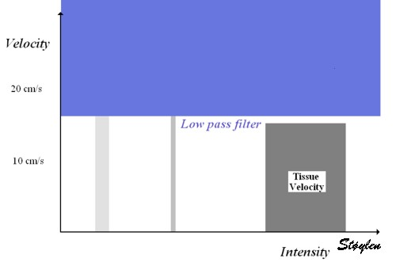
|
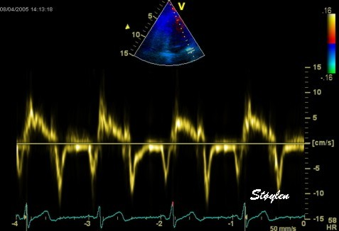
|
|
All
modern ultrasound machines today has separate applications for tissue
Doppler which optimises the signal for this purpose, among other things
by applying a low pass filter that removes most of the flow velocities.
This results in a cleaner signal.
|
|

|
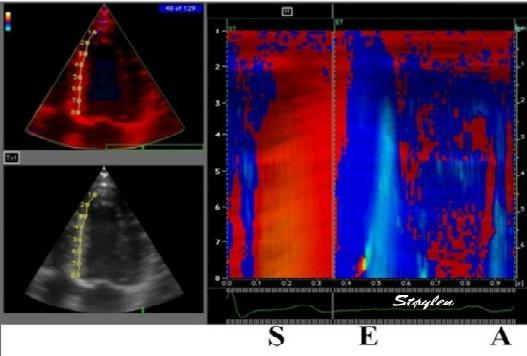
|
| Velocity and strain rate imaging of the same (normal) left ventricle. The colour sector can bee seen to be equal to the B-mode sector. Velocity is red in systole when all parts of the heart muscle moves toward the probe (apex) and blue in diastole. The changes are too quick to observe entirely, to make full use of the information the image has to be stopped and scrolled. | Curved anatomical M-mode (CAMM). A line is drawn from apex to base, and velocity data over time are sampled along the line and displayed in colour along a straight line. The numbers on the curve and the M-mode are included for reference and corresponds to the numbers on the B-mode image. This example shows the septum from the apex to base along one axis, and one heart cycle along the other, in a two - dimensional space - time plot. S: systole, E: early relaxation, A: atrail contraction. |
The information coded in the colour images, is fundamentally
numerical for all varieties of colour doppler, as described
above
. Thus, the velocity time traces can
be extracted fom any point in the image as shown below.
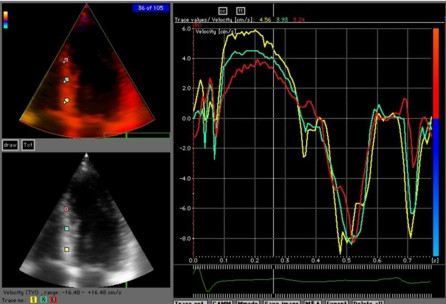
Extracted velocity curves from three points in the septum. As in colour flow, the M-mode gives the depth - time - direction information, while the curves give the quantitative information.
Thus: 2D images show the whole sector image at one point in time, velocity or strain (rate) traces shows the whole time sequence (f.i. a heart cycle) at one point in space, while CAMM shows the time sequence as well as the length of the line, but only semi quantitative motion / deformation information.


|

|
| Image from another subject in the study shown above ( 266 ). In this subjech there is some clutter from reverberations, as seen by the band in systole close to the zero line. In this case the peak velocity by autocorrelation is lower than the modal velocity of the main spectral band, which still was the one closest to the RF M-mode reference. (Figure courtesy of Svein Arne Aase, modified from ( 266 )) |
Clutter filtering may reduce the problem,
as seen here. There is aa band of clutter close to zero velocities, but
as seen here, the spectral modality makes it very easy to separate the
true and clutter velocities. However, the clutter affects the
autocorrelation velocity (red line), giving lower velocities, but with
clutter filter this effect is removed (red line) , and the peak value
is substantially higher. Image modified from (
268
).
|

|
|
A patient with a stationary reverberation
in the basal lateral wall (left), with the sampling point for both pw
and colour Doppler is indicated. . The pw spectral Doppler
(middle) can be seen to be broadened, comprising all velocities between
peak and zero. This is due to stationary pixels due to the artifact,
but a sufficient number of pixels with normal velocity (and a number of
pixels in between). Averaging the spectrum will result in too low
values, as the lowest values are due to artifact. The
autocorrelation values (right) are likewise average values, thus too
low.
|
By reducing the number of sender beams and increasing the MLA
factor, it has proved possible to increase the TDI frame rate
substatially (
172
,
268
). Using two broad, unfocussed
(planar) beams, each covering one wall, as well as 16 MLA and sparse
interleaved B-mode imaging, it has been possible to increase frame rate
to 1200 FPS in 2D imaging. this is the extreme example of exchanging
spatial for temporal resolution.

Few beams give high frame rate.
Image courtesy of Svein Arne Aase, modified
from
(
172
).
Already this has shown new information about both the
pre ejection
and
post
ejection
dynamics.

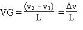
a
|

b
|

|

|
| Kernel displacement Displacement curve obtained by tracking through a whole heart cycle shown to the right, derived velocity curve shown below. | From two different kernels, the relative displacement and hence, strain as well as strain rate can be derived. |
 |
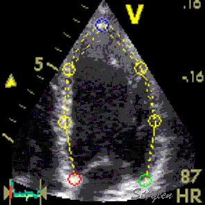 |
| With kernels at all segmental borders, segmental motion and deformation can be tracked, as shown to the right. | And the length variations of the segments between the kernels kan be followed through the heart cycle. |

 |
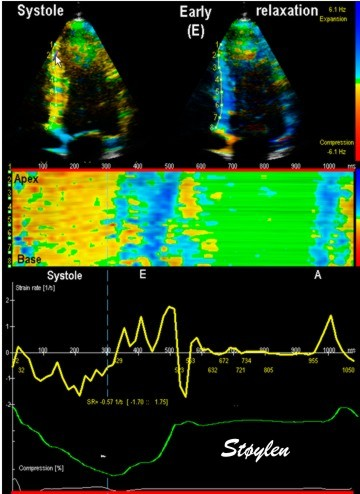 |
| Strain rate is displayeed as yellow to orange in systole (shortening) and cyan to blue in the two diastolic phases early and late filling (lengthening), but green in periods of no deformation. The changes are too quick to observe entirely, to make full use of the information the image has to be stopped and scrolled. |
Combined strain rate image with one
systolic and one diastolic frame displaued in B.mode, below the CAMM
from the septum and below that the strain rate (yellow) and strain
curves from one point in septum.
|
|
|
Integration
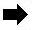
of velocity |
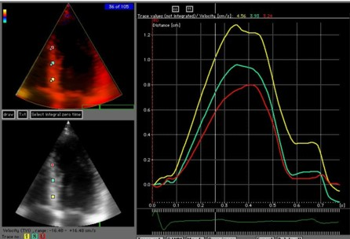
|
|
Velocity traces may be considered
the raw data. All other modalities are integrated or derived from this.
Here normal function is shown at normal basal velocity (6 cm/s), as
well as normal decrease from base to apex. This decrease is
evident by visual assessment alone, as the distance between the curves.
The distance between the curves then is a direct visual assessment of
strain rate. Strain rate curves can be obtained by spatial
derivation of velocity:
|
Displacement curves obtained by
integration of velocity. Temporal integration reduces velocity to
motion. In principle, strain could be obtained by spatial derivation of
displacement, although not used:
|
|
|
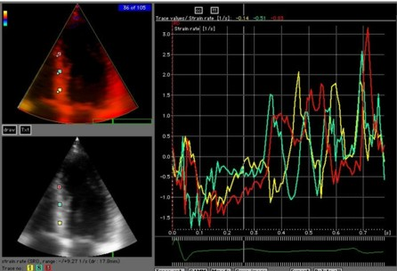
|
Integration
of strain rate |
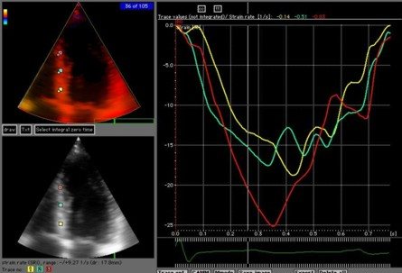
|
|
The strain rate curves are the
spatial derivative of velocity, showing the time course of the velocity
gradient. This is equivalent to the local deformation rate. The curves,
however, are noisy, shown in this unfiltered image, the increase in
random noise is a consequence of derivation.
|
Strain is regional deformation. This
can be obtained both by
spatial derivation of strain
(not used at present) and
temporal
integration of strain rate (used).
|

|

|
|
Colour M-mode (CAMM) of tissue velocities
in fundamental (above) and harmonic (below) imaging. Slight aliasing
can be seen in native
imaging in the e' wave at the base. In harmonic imaging, there is aliasing both in the S' wave, and the e' wave (double). |
Colour tissue Doppler curved M-mode in
harmonic imaging, velocity plot (above), strain rate (below). As can be
seen there is heavy aliasing in the
velocity plot, but no aliasing in strain rate imaging. |